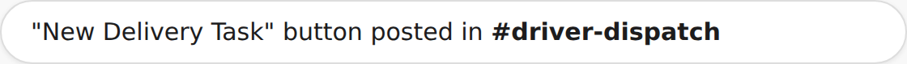
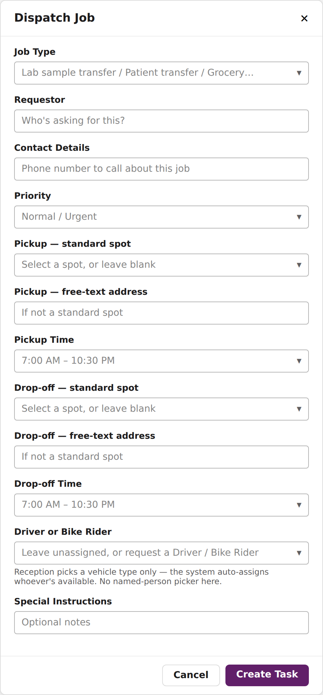
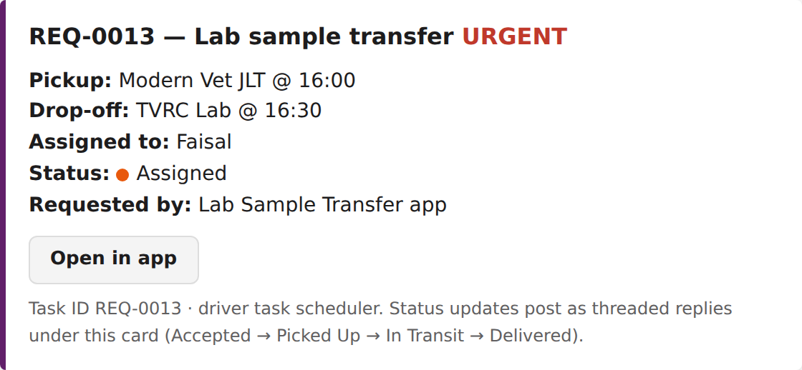
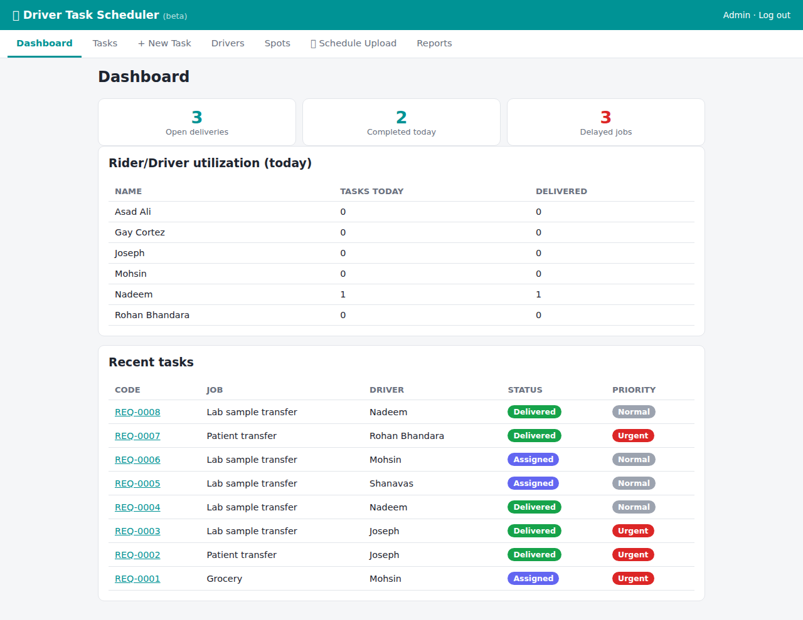
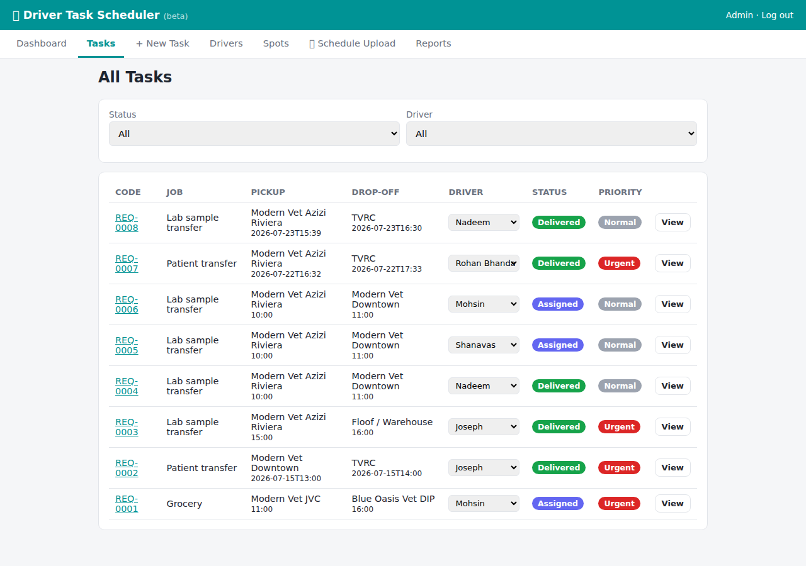
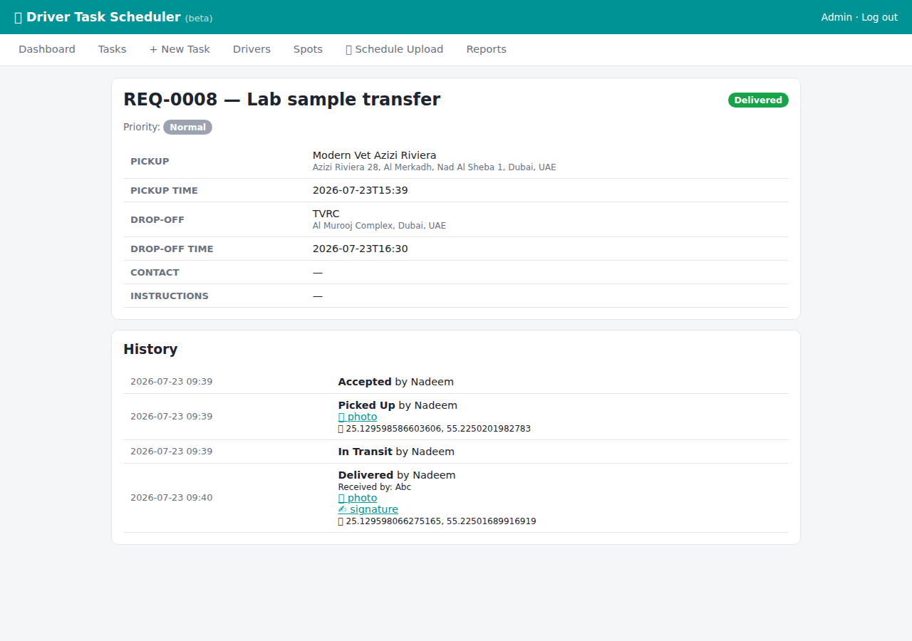
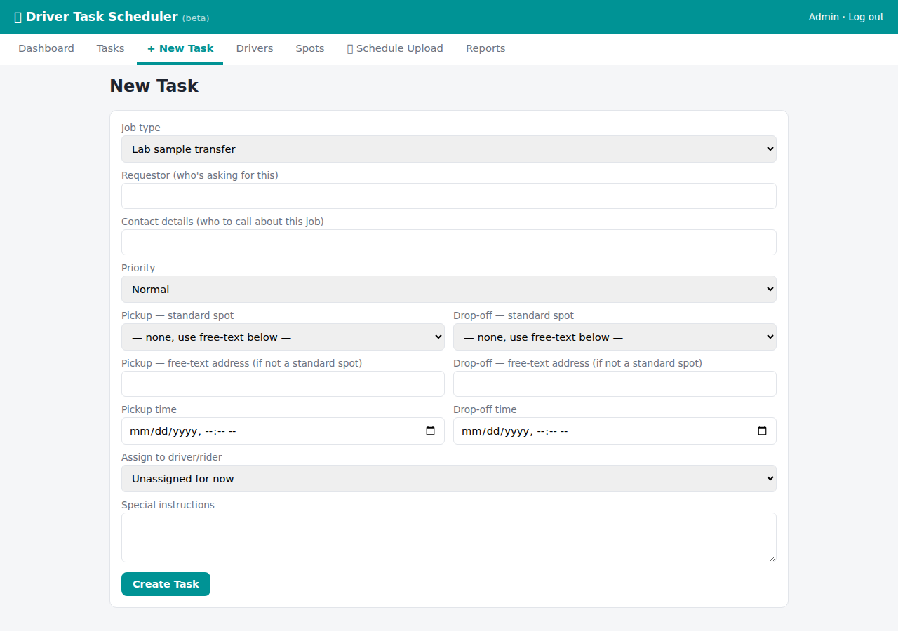
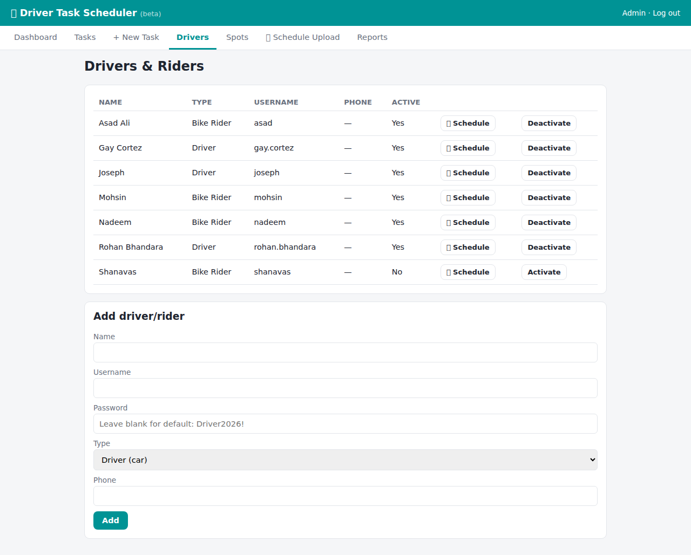
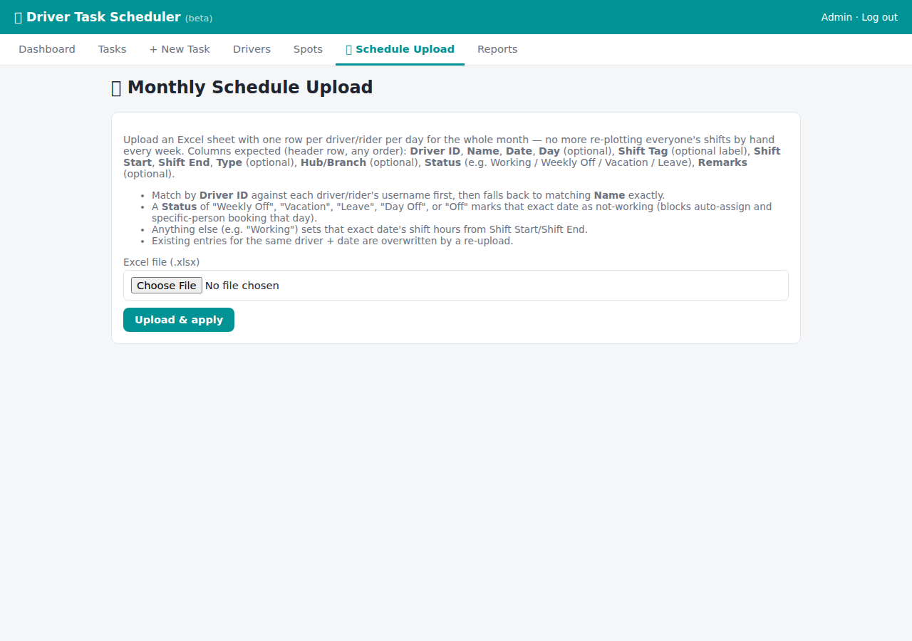

Need something driven between clinics — a lab sample, a patient, groceries, anything? This app books a driver, tracks the job in real time, and keeps a full delivery history.
← All app manualsA button is pinned in #driver-dispatch — click it to open the request form.

Pick the Job Type (lab sample transfer, patient transfer, grocery, etc.), Priority, pickup and drop-off locations/times, and add a Requestor name + contact number so the driver can reach you.

The job is posted to #driver-dispatch and the assigned driver is notified in the app.

You don't always need to use this app directly. Both the Lab Sample Transfer and Patient Endorsement apps can create a driver job for you automatically — just fill in the "Collect By" / "Pickup Time" field in those forms and a task shows up here without any extra steps. Patient transport jobs are always restricted to a Driver (car) — never a Bike Rider, for safety.
Every status update — Accepted, Picked Up, In Transit, Delivered — is posted as a reply in the task's Slack thread, with a timestamp and who updated it. Some updates include a photo, signature, or GPS location.
If a job is marked Urgent, the dispatch manager gets a direct @mention so it doesn't get missed.
Drivers log into vetalliance.website/driver-app to see their assigned jobs for the day.
Tap through Accepted → Picked Up → In Transit → Delivered. You can attach a photo, capture a signature, and the app records your GPS location automatically at delivery.
Your shift schedule for the month is uploaded by the admin team and shows in the app — no more asking "am I on today?"
For managers: vetalliance.website/driver-app





